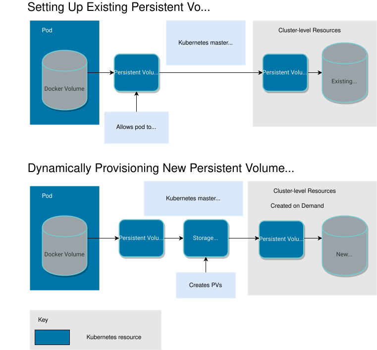

持久存储的工作原理
持久卷（PV）是 Kubernetes 集群中的一块存储，而持久卷声明（PVC）是对存储的请求。
在 Kubernetes 中使用持久存储有两种方式：
-
使用现有的持久卷
-
动态提供新的持久卷
要使用现有的 PV，您的应用程序需要使用与 PV 绑定的 PVC，并且 PV 应包括 PVC 所需的最小资源。
对于动态存储分配，您的应用程序需要使用绑定到存储类的 PVC。存储类包含提供新持久卷的授权。

有关更多信息，请参阅 官方 Kubernetes 存储文档
关于持久卷声明
持久卷声明（PVC）是请求集群存储资源的对象。它们类似于您的部署可以兑换存储访问的凭证。PVC 被挂载到工作负载中作为卷，以便工作负载可以声明其指定的持久存储份额。
要访问持久存储，Pod 必须将 PVC 挂载为卷。此 PVC 允许您的部署应用程序将数据存储在外部位置，因此如果 Pod 失败，可以用新 Pod 替换并继续访问存储在外部的数据，就好像没有发生中断一样。
每个 Rancher 项目包含您创建的 PVC 列表，可从 中获取。您可以在未来创建部署时重用这些 PVC。
使用 PVC 和 PV 设置现有存储
您的 Pod 可以在 卷, 中存储数据，但如果 Pod 失败，该数据将丢失。为了解决这个问题，Kubernetes 提供了持久卷（PVs），它们是与您的 Pod 可以访问的外部存储磁盘或文件系统相对应的 Kubernetes 资源。如果 Pod 崩溃，其替换 Pod 可以访问持久存储中的数据，而不会丢失任何数据。
PVs 可以代表您在本地托管的物理磁盘或文件系统，或供应商托管的存储资源，例如 Amazon EBS 或 Azure Disk。
在Rancher中创建持久卷不会创建存储卷。它仅创建一个映射到现有卷的Kubernetes资源。因此，在您能够将持久卷作为Kubernetes资源创建之前，您必须先配置存储。
|
重要说明：
PVs 在集群级别创建，这意味着在多租户集群中，具有访问不同名称空间的团队可以访问相同的 PV。 |
将 PV 绑定到 PVC
当 Pod 设置为使用持久存储时，它们会挂载一个持久卷声明（PVC），该 PVC 的挂载方式与任何其他 Kubernetes 卷相同。当每个 PVC 被创建时，Kubernetes 主节点将其视为存储请求，并将其绑定到满足 PVC 最低资源要求的 PV。并非每个 PVC 都保证会绑定到 PV。根据 Kubernetes 文档,
如果不存在匹配的卷，声明将无限期保持未绑定状态。当匹配的卷可用时，声明将被绑定。例如，配置了许多 50Gi PV 的集群将无法与请求 100Gi 的 PVC 匹配。当集群中添加一个 100Gi PV 时，PVC 可以被绑定。
换句话说，您可以创建无限的 PVC，但它们只会与 PV 绑定，如果 Kubernetes 主控能够找到至少满足 PVC 所需磁盘空间的足够 PV。
要动态分配新存储，挂载在 Pod 中的 PVC 必须对应于存储类，而不是持久卷。